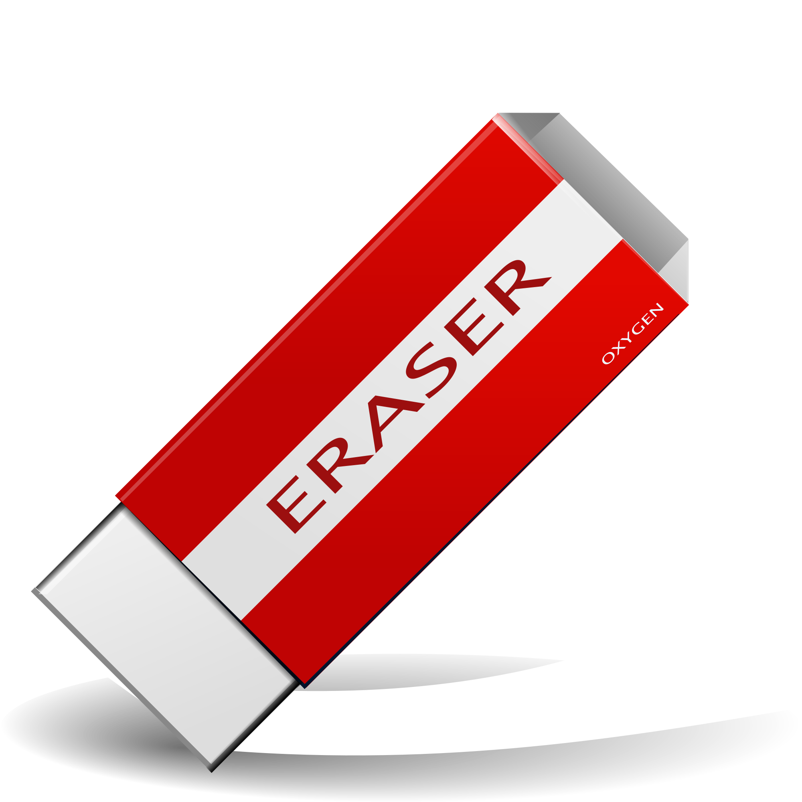

Welkom op deze site, ik heb deze site gemaakt nadat ik merkte dat er vaak mede leerlingen zijn die iets zijn vergeten en dus iets moeten lenen. dus ik dacht dat het wel leuk zou zijn om een klein experiment te houden en kijken hoeveel leerlingen er daadwerlijk een klein dedrag voor neerzouden leggen
Op dit moment is de site nog in de test fase! Dit betekend voor het moment dat alleen klas 3D de site kan gebruiken, als de site toch een succes word zal ik de site uitbreiden en voor alle klassen beschikbaar ma
Als u veder naar onder scrolt op deze site zult u een lijst met spullen zien die beschrikbaar zijn op dit moment, u kunt op het product klikken dat u nodig heeft en kunt dan een betaling doen via tikkie, er zal ook wat vedere informatie gevraagd worden. Bijvoorbeeld: Waar het product moet afgeleverd worden ect U kunt aan het begin van de schooldag een bestelling plaatsen of een minimaal 3 uur voor het lesuur begint waarvoor u het product nodig heeft zodat ik het product mee kan nemen of optijd kan afgeven in een pauze. veder is het ook mogelijk om een product te kopen. Dit werkt hetzelfde alleen dan mag u het product houden. Bij een gehuurd product verwacht ik het product na het lesuur terug.
Blauwe pen (0,20)
Gum (0,20)